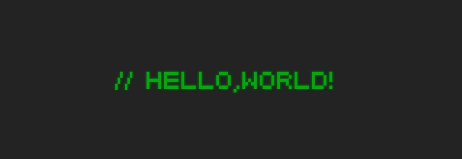

Let me introduce myself
Full Name: Kai Yan Koo | Previously: Dental Practitioner | Email: kaiyankoo@gmail.com
I completed my Postgraudate Computer Science degree at University of Adelaide in 2023.
My undergraduate was in oral health and dental science, however I have found a new passion for software engineering.
My primary interests are in low-level programming, parallelism, distributed systems, but I also have experience in full-stack development.

I can work independently or as part of a team. I have strong research, coding, and problem solving skills. My areas of expertise are low-level programming, distributed systems, socket programming, and parallelisation.
These are some my technical skills:

- Private tutor for SACE stage 2 Chemistry, Biology and English since 2015.
As a private tutor, I work with year 12 students, either one-on-one or in groups of up to three, to reinforce their understanding of the topics taught under the SACE
stage 2 curriculum.
I personalize my sessions to each student, ensuring their individual needs and learning styles are accommodated.
Providing additional material as well as assignment guidance, including research project. I also provide
pre-test/exam advice as well as revision.
- Graduate Oral Health Therapist at Teeth R Us from 2021 - 2021
Worked in a team-based environment to offer high quality, patient centred care, for predominanty paediatric patients.
Provided general dentistry as well as used 3D scanning equipment and traditional alginate impression taking, for crowns,
mouth guards, and night guards.
Held consults with parents and paediatric patient to discuss dental health, treatment, and educating them on best oral
health practices.
- Student Oral Health Therapist working at the South Australian Dental Service (Elizabeth) from 2019 - 2020.
As a student OHT undertaking placement at the South Australian Dental Service, I provided general dentistry to a variety of patients
in a public health setting. In addition to treatment, providing information and education to patients, often from disadvantaged or recent
migrant backgrounds, was a large part of my responsibilities. I worked under the supervision and guidance of an AHPRA registered dental practitioner,
constantly learning new skills, applying those skills, and gaining experience.